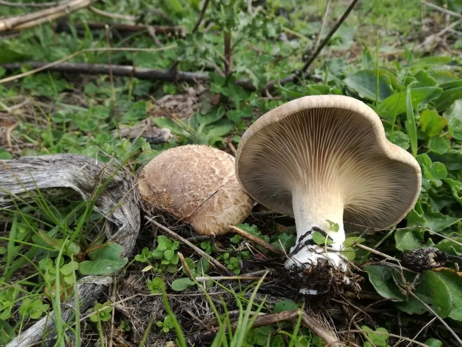

真菌 · 真菌界
杏鲍菇 Pleurotus eryngii

杏鲍菇的菌柄粗壮洁白、菌盖小，肉质紧实有嚼劲，带有杏仁香气，是工厂化栽培最普遍的食用菌之一。
- 分类
- 门担子菌门纲伞菌纲目伞菌目科侧耳科属侧耳属
- 栖息环境
- 野生时生于伞形科植物根部，栽培用木屑、玉米芯等培养料
- 地理分布
- 原产地中海沿岸与中亚，现中国各地工厂化栽培
- 保护级别
- 暂无评估（IUCN 未评估，中国未列入重点保护名录）
物种志
杏鲍菇是担子菌门侧耳科的真菌，子实体单生或丛生。菌盖较小，直径 3–8 cm，初期半球形，后平展，表面淡灰褐色至浅黄褐色，光滑；菌肉白色、厚实。菌褶白色至淡黄色，延生于菌柄。菌柄粗壮，长 5–15 cm，直径 3–6 cm，白色，肉质紧实，是主要的食用部分。孢子印白色至淡黄色。野生杏鲍菇的形态与栽培品差别不大，但菌盖比例更大。
杏鲍菇原产于地中海沿岸、中亚和北非，野生时寄生或腐生于伞形科植物刺芹、阿魏的根部，因此又称“刺芹侧耳”。它耐干旱、适应性较强，如今主要用木屑、玉米芯、麸皮等作培养料进行工厂化瓶栽和袋栽，是中国产量很大的食用菌品种。杏鲍菇肉质肥厚、口感脆嫩有嚼劲，带有淡淡的杏仁香气，适合煎、炒、烤和涮火锅；富含蛋白质、膳食纤维和多糖。
形态与习性
- 菌盖直径 3–8 cm，淡灰褐色
- 菌柄粗壮，长 5–15 cm，白色
- 菌肉白色紧实，口感有嚼劲
- 孢子印白色至淡黄色
- 野生寄主刺芹、阿魏等伞形科植物根部
- 栽培木屑、玉米芯、麸皮培养料
- 食用性可食，带杏仁香气
趣味知识
- 杏鲍菇的菌柄比菌盖大得多，主要吃的就是这根粗壮的“鲍鱼柄”。
- 它野生时寄生在刺芹等伞形科植物根部，所以又叫“刺芹侧耳”。
- 杏鲍菇口感像鲍鱼一样紧实，名字中的“鲍”由此而来。
- 工厂化栽培的杏鲍菇在低温、高湿的菇房里长出。